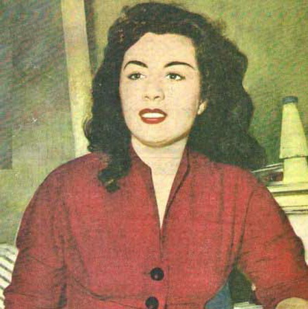
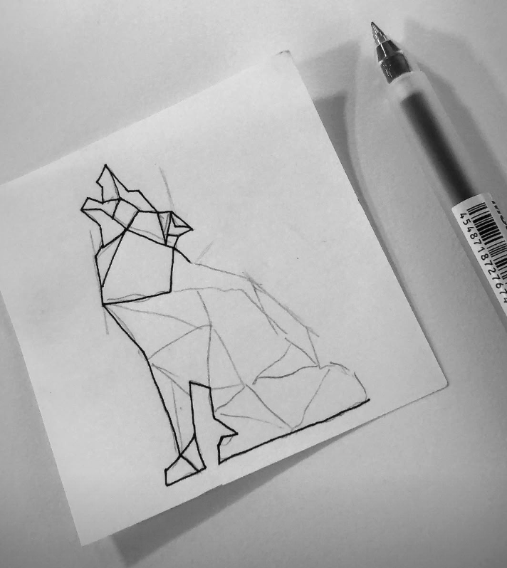
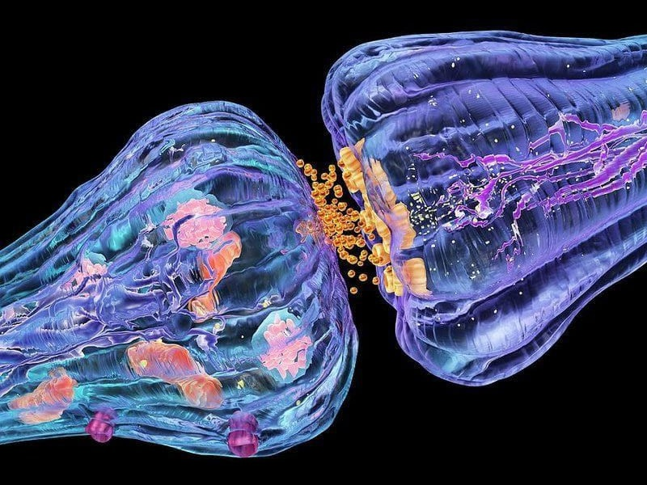
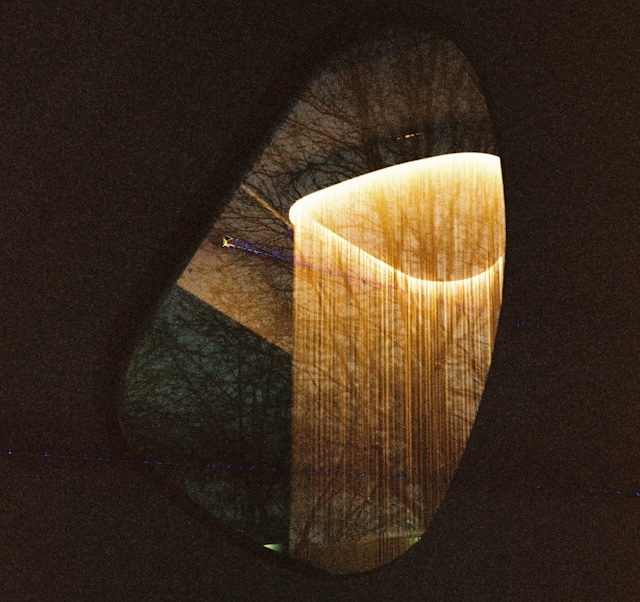
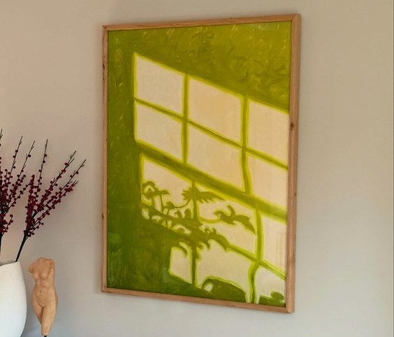

Focus
AI/ML and Enterprise Workflows
Expert in the intersection of enterprise complexity and AI, translating complex data models into usable, performant UIs and stakeholder management.
Design philosophy
Simplify Complexity | Drive Growth
Systems Thinking
Design for the end-to-end ecosystem, not just the screen.
Data Informed Empathy
Use data and research to truly understand user’s jobs-to-be-done.
Technical Feasibility
Know the stack to ensure designs are efficient and launchable.
Skills
Design and Strategy | Strategic and analytical thinking, pattern recognition, complexity simplification, interactive prototyping, and visual communication. Prototyping and Design Engineering | Front-end development (Figma, ReactJS, JavaScript), PHP, Python, and MySQL. Domain Expertise | 10+ years in Data Analytics and AI (Enterprise & Accessibility focus). Leadership and Education | 9+ years of teaching experience (Mathematics/Science, grades 4-12), g2g coaching, interview training, design sprint facilitator license.
Leadership and Mentorship
Through strategy and mentorship as a senior IC
Defined cross-functional communication guidelines to harmonize handoff.
Supported junior designers by leading design critiques and workshops.
Operational contribution to optimize processes and enable scalability.
9+ years teaching math and sciences to grades 4-12
4+ years event design and production supervisor
Education
Simon Fraser University - Aug 2018
BSc in Interactive Arts and Technology
Research projects:
Visual analytics for emergency management
Information design for science communication.
Adler University - Sep 2019
MA Applied Psychology (Coursework)
Teaching Assistant: Adlerian Psychology and Psychopathology
Human computer interaction & cognitive load management
Experience
2014 - 2015 VIEW Primagate
2018 - 2019 VIEW SAP
2019 - 2021 VIEW Visier
2021 - 2022 VIEW BenchSci
2023 - 2025 VIEW Google


Design process for a complex, data-intensive AI product
For example, project BenchSci
Data First Research: Deep domain empathy for technical users; use quantitative data before design.
Simplification: Use creative visualization to simplify complex entity mapping; focus on explainability to build user trust.
Full Lifecycle Ownership: Provide front-end commits (ReactJS/JS) to ensure design integrity at the implementation stage.
Measure Impact: Track exponential acceleration of user output and contribution to annual OKRs/MAUs.
Balancing product led growth (PLG) strategic goals with complex enterprise needs
For example, Google Cloud aggressive OKRs and external commitments
PLG (Individual): Drive adoption by reducing friction. Led Gemini CLI
integrations with VS Code, GitHub, Snyk, etc., to increase Monthly Active Users (MAUs).
Enterprise (Security/Scale): Pivot to governance and security. Designed features
for access control/audit logging in Cloud DevOps suite (Artifact Analysis, Cloud Build).
Unifying Principle: Design a seamless path from individual adoption to enterprise
standardization, leveraging expertise in gcloud CLI/Gemini CLI.
Advocating for user needs while balancing design ideals against development constraints
Data Backed Advocacy: Used user research and business risk (increased support costs) to argue against the immediate engineering constraint (e.g., Visier data import flow).
Technical Compromise: Leveraging own front-end skills (ReactJS/JS), I proposed a solution delivering 80% of the ideal UX in half the estimated time.
Iterative Release: Released the high-value core first (MVP), deferring the most technically taxing complexity to a later iteration.
Data Backed Advocacy: Used user research and business risk (increased support costs) to argue against the immediate engineering constraint (e.g., Visier data import flow).
Technical Compromise: Leveraging own front-end skills (ReactJS/JS), I proposed a solution delivering 80% of the ideal UX in half the estimated time.
Iterative Release: Released the high-value core first (MVP), deferring the most technically taxing complexity to a later iteration.
My 3-5 year vision for UX in the AI/Cloud space, and how my background prepares me to lead it
Ambient and Invisible AI UX: AI assistance must be in-context (in the code editor via Gemini integrations), removing context-switching.
CLI Intelligence: Infuse powerful intelligence into the Command Line Interface (CLI) to maximize efficiency for DevOps users.
Trust and Ethics: Design must prioritize transparency and user control as AI becomes ambient. Uniquely prepared by MA in Applied Psychology to design for human trust, memory, and behavior.


Successfully advocating for a design strategy to an executive, and mentoring a design team as a senior designer IC
Data Driven Advocacy: Advocate for design strategy using OKRs and business impact data (e.g., exponential acceleration of research at BenchSci ). Frame design decisions as risk mitigation or revenue contribution.
Mentorship and Culture: Implemented foundational user research and validated user personas to uplift the design function at SAP. Defined communication guidelines to harmonize cross-functional processes, fostering a culture of clear, user-centric feedback.
Leading with Ownership: Demonstrate ownership across the full product lifecycle, setting the standard for the team.
Leveraging my psychology background to untangle complex enterprise tools, reducing memory load for users, and designing around the private logic and social nature people use to get their work done
Holism and Consistency: Apply the concept of holism by ensuring a consistent, single source of truth across all multimodal tools (IDE, web, 3P integrations , and CLI ), reducing cognitive load.
Social Nature/Collaboration: Design features that leverage the social nature of people by making collaboration and knowledge sharing frictionless (e.g., how teams use Artifact Registry in Cloud DevOps ).
Memory and Simplification: Use the knowledge of memory to simplify complexity, as achieved with creative data visualization techniques , turning complex data into intuitive, actionable insights to align with the user's "private logic"


Simplifying the handoff process through my dev background and managing long-term design debt by keeping a close eye on technical feasibility from day one.
Technical Handoff: Leverage front-end dev (ReactJS, JavaScript) skills to speak the same language as engineers. Served as the dedicated subject matter expert for gcloud CLI/Gemini CLI feature integrations, ensuring high-fidelity implementation.
Design System Contributor: Actively managed design consistency across multiple products (Cloud DevOps, Artifact Analysis, etc. ) to minimize design debt.
Proactive Commits: Quick advancement to full product lifecycle ownership , including front-end commits, demonstrates a commitment to ensuring design quality and efficiency post-handoff.
User research and accessibility when designing a product for a massive, global user base, such as enterprise products at a multinational corporation
For example at SAP, or Google
Universal Design: Utilize the principles of Universal Design (informed by my background in Applied Psychology ) and my 10+ years in data analytics/AI (enterprise, accessibility) to ensure solutions are inclusive by default.
Global Validation: At SAP, improved the design function by implementing foundational user research (card sorting, interviews) and validated user personas, which are critical for cross-cultural consistency.
Enterprise Scale: Applied research and design for a diverse, global user base at Roche, Novartis, and other clients using the BenchSci Experiment Navigator.
Example of my design work leading to measurable business outcomes beyond a simple feature launch, defining and tracking metrics.
Strategic Outcome: Led the initial product vision and foundation for the AI-driven BenchSci Experiment Navigator , resulting in the exponential acceleration of life-saving research.
Growth Metrics: At Google Cloud, designs for Gemini/Gemini CLI integrations were directly responsible for increasing Gemini's monthly active users and contributing to the organization's annual OKRs.
High Volume Impact: At Visier, owned 13 epics in parallel and consistently provided innovative, data-backed solutions, proving ability to handle a massive, complex workload with measurable platform improvements.